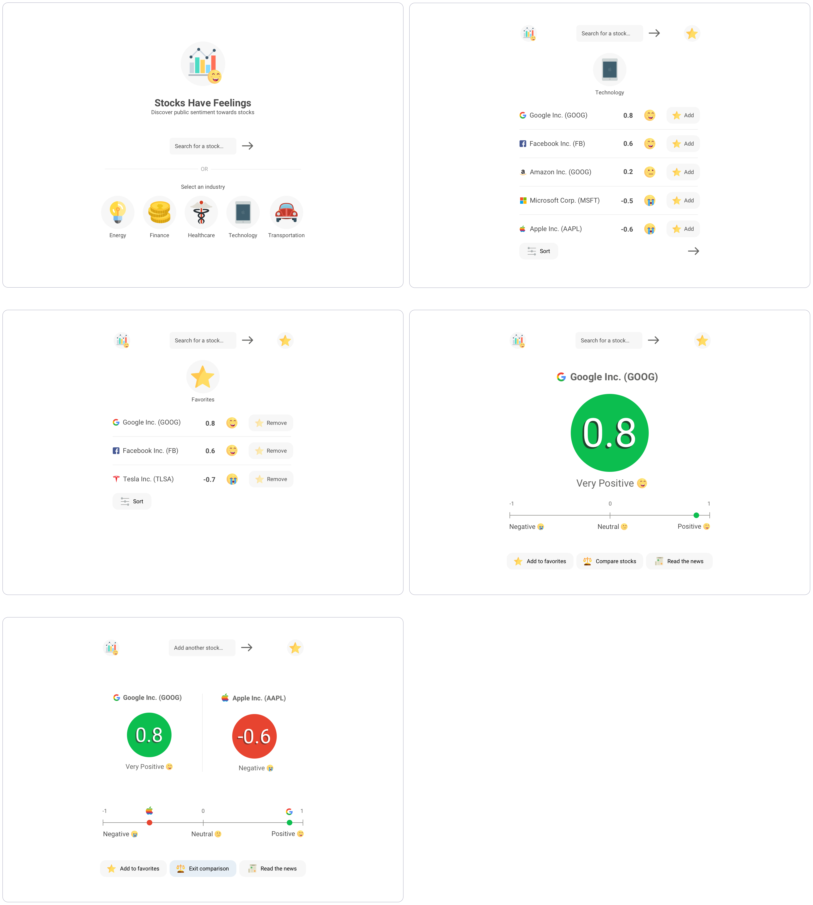
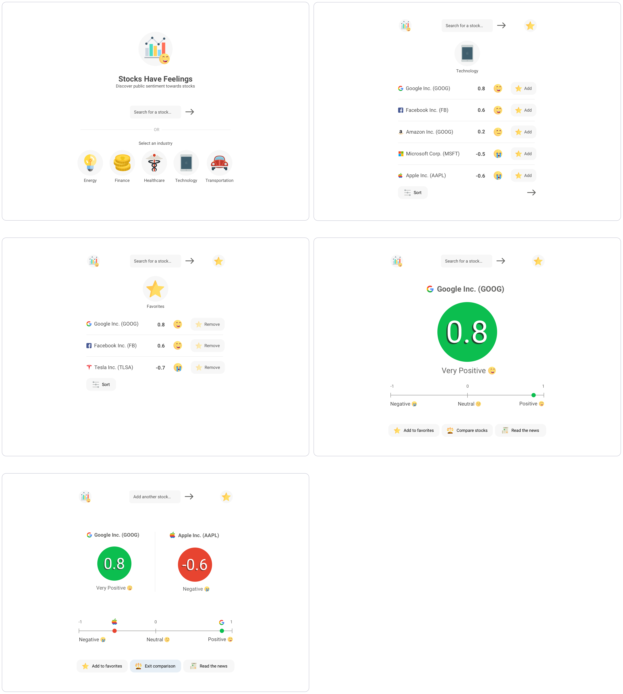

Conveying public sentiment towards company stocks based on social media
Problem Stock trading can seem very daunting. When first starting out, new users may feel overwhelmed by the number of graphs, charts, and reports filled with financial jargon. In addition, the countless concepts for predicting the stock market may go over a beginner's head.
This project attempts to address issues of usability and comprehension with regards to what affects stocks. More specifically, how can beginner traders better understand the forces that move stock prices?
Research Many forces move stock prices: fundamental factors, technical factors, and market sentiment, for example. However, interviews with expert traders revealed that the first two factors typically requires some extensive background knowledge to fully understand.
On the other hand, user surveys revealed that the concept of market sentiment generally made sense to people. Several users mentioned that the concept felt intuitive; if many people support a company, it's likely that it's stock price would rise as well.
Based on the research findings, the project goal became to create an intuitive tool that presents market sentiment data in a usable and pleasing manner. It was important for the tool to feel simple in contrast to existing trading tools whose sentiment ratings are typically hidden away in dense, complex charts.
Early Design The early design focused on creating a minimum viable product for conveying market sentiment. The process of learning about market sentiment was split into two main user tasks: searching for a stock and then understanding its sentiment rating.
Click to learn more about the rationale behind the sentiment rating system. User Testing For testing the early design, both beginner and advanced stock traders were asked to perform a benchmark task of finding sentiment ratings for various stocks. The testing took place on an Invision-based prototype.
The beginner traders mentioned that the interface felt easy to use. However, when asked to find sentiment ratings for unfamiliar companies, they struggled to come up with or discover new companies on the fly. They mentioned that the minimal search bar interface felt too open-ended and that they would like more guidance in terms of possible stock to search on.
The advanced traders mentioned that showing a stock's individual sentiment rating was nice, but that it could be much useful if it were compared alongside other stocks' sentiment ratings. With a relative point of comparison to other stocks, more insight could be gathered to make educated decisions.
Iterated Design In the iterated design, several features were added: ability to browse stocks by industry, compare two or more stock's sentiment, and show relevant news articles that supported the sentiment rating.
Categorizing stocks by industry allowed for more browsing and discovery rather than only looking-up stocks with the intent of encouraging exploration for beginner traders.
Moreover, the intention behind including relevant news articles was to enable interested traders to investigate the source material and make their own judgements.
 

Front-End Prototype For rapid prototyping, a basic front-end web prototype was coded using HTML, CSS, and Javascript. When the user searched for a stock, the New York Times API was called and output several news articles about the stock. These news articles were then fed into the Watson sentiment API to calculate an average sentiment rating.
For future iterations, it would be of value to look into refactoring in Angular or React for better extendability and code management over time. Also, experimenting with the Twitter API to perform sentiment analysis on stock-related tweets may provide interesting results.